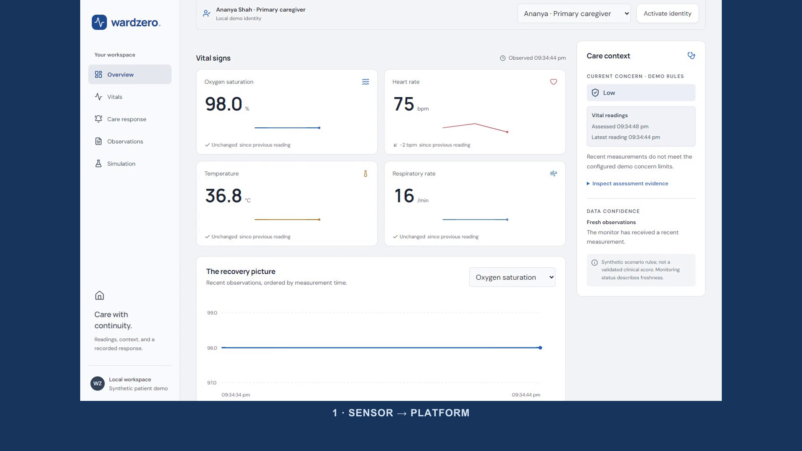

OPERATION WARD ZERO · WZ-95CMQ
Explained concern.A recorded human response.Recovery when sensors disconnect.
Synthetic-data prototypeEngineering rules · In-app escalationNo clinical validation claim
A WORKING HOME-CARE HANDOFF
